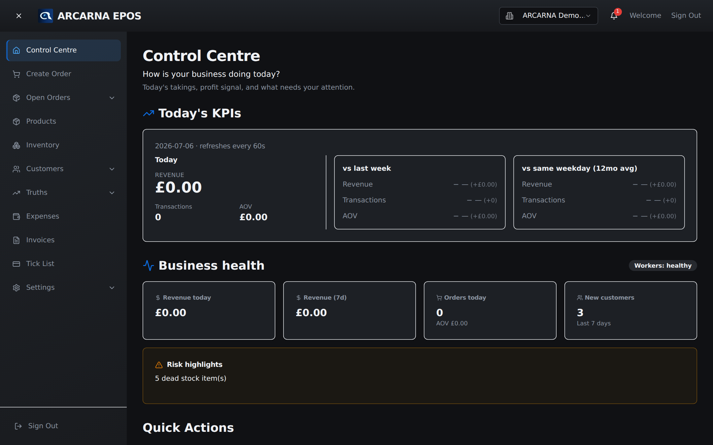

Section 1
Getting Started & the Control Centre
Who can use ARCARNA, how to sign in, and what the home screen is telling you. CASHIER MANAGER
Roles at a glance
| Role | What they do in ARCARNA |
|---|---|
| CASHIER | Starts and ends their own shift, creates orders at the till, takes payments, looks up customers. |
| MANAGER | Everything a cashier does, plus: manages products and stock, customers, monitors and amends orders, logs expenses, reads Insights, and runs end-of-day. |
| ADMIN / OWNER | As Manager, plus user approval, settings, branding, locations and organisation-wide configuration. |
Signing in
- Open arcarna.viger.cloud in your browser (works on tills, tablets and phones).
- Tap Sign in. You'll be taken to the secure ARCARNA account page — enter your email and password.
- First time here? Your account must be approved by a manager before you can see anything. You'll see a "pending approval" screen until they approve you — this is normal.
- Once signed in you land on the Control Centre (below).
Manager note — approving a new staff member
New sign-ups appear under Settings → User Access. Approve them, then set their role
(Cashier / Manager) and location. They can't see any business data until you do.
The Control Centre (home screen)
This is the first screen after signing in — a live summary of how the business is doing today. It refreshes itself every 60 seconds.

What each panel means
| Panel | What it tells you |
|---|---|
| Today's KPIs | Revenue — money taken so far today. Transactions — number of orders. AOV (average order value) — revenue ÷ transactions, i.e. the size of a typical sale. The two comparison boxes show how today compares with the same day last week, and with the average for this weekday over the last 12 months — so a quiet Tuesday is judged against Tuesdays, not Saturdays. |
| Business health | Quick cards: revenue today, revenue over the last 7 days, orders today, and new customers this week. The Workers: healthy badge means background processing (invoices, stock updates, analytics) is running normally. |
| Risk highlights | Things that need attention — e.g. dead stock (products that haven't sold in a long time). Managers should glance at this daily. |
| Quick Actions | Shortcuts to the most common jobs — creating an order, adding a product, and so on. |
Finding your way around — the sidebar
| Menu item | What it's for | Mainly used by |
|---|---|---|
| Control Centre | Today's summary (this screen). | Everyone |
| Create Order | The till — build a basket and take payment. (Section 3) | Cashiers |
| Open Orders | Monitor, amend and refund orders already created. (Section 4) | Everyone |
| Products | Add, edit and retire products; prices and barcodes. (Section 5) | Managers |
| Inventory | Stock levels, incoming stock and goods receiving. | Managers |
| Customers | Customer records and purchase history. (Section 6) | Everyone |
| Truths | Insights & analytics — what's really selling and when. (Section 8) | Managers |
| Expenses | Log business and order costs so profit numbers are honest. (Section 7) | Managers |
| Invoices | View, download and email invoice PDFs for any order. | Managers |
| Tick List | Customers buying on account ("tick") and what they owe. | Everyone |
| Settings | Business details, branding, users, cashiers & commission, loyalty. (Section 9 covers loyalty) | Managers |
Tip — it works offline
If the internet drops mid-shift, keep serving: orders queue on the device and sync automatically when the connection returns. You'll see an offline indicator in the corner while this is happening.